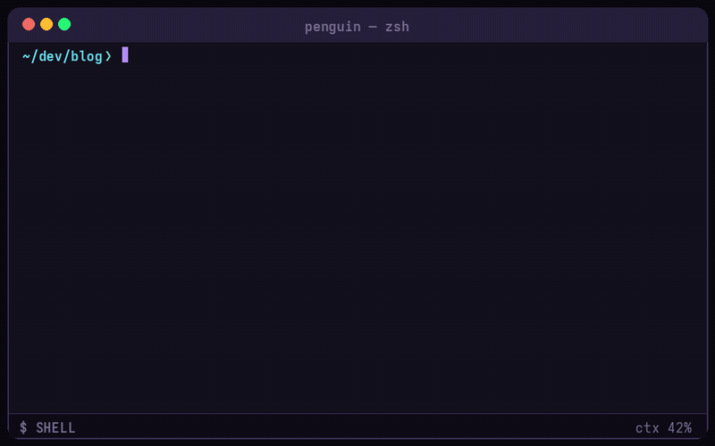
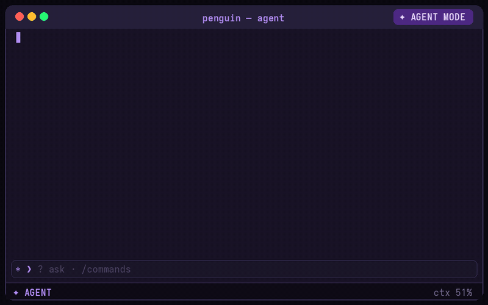
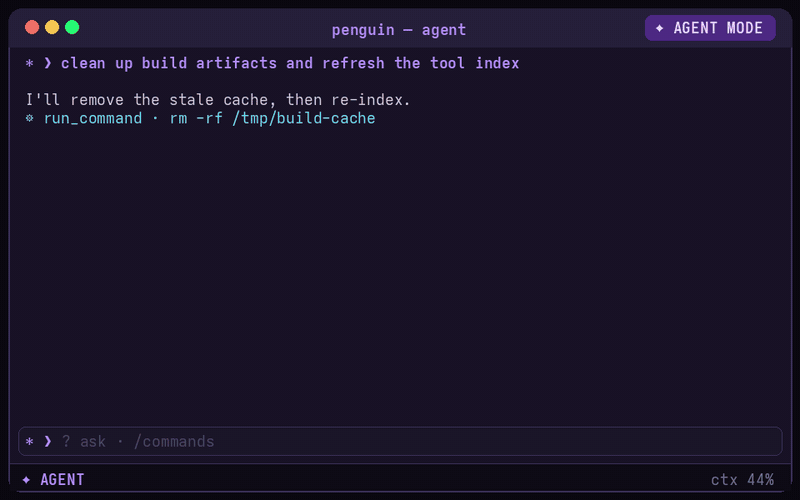
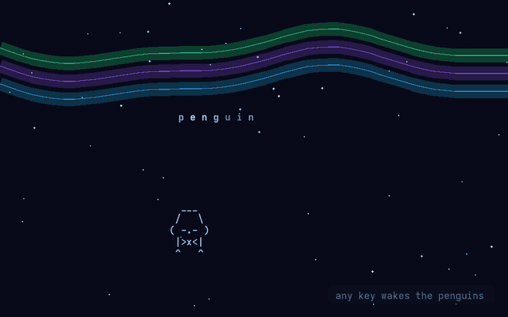

A terminal that runs inside any terminal — with an AI system assistant one keystroke away. Real PTY, real shell, custom VT emulator, and a safety engine built for autonomous runs.

Drop-in, not a replacement. Your shell keeps running underneath. Ctrl+Space slides into agent mode; toggle off and your terminal is exactly where you left it — scrollback, running programs and all.

/goal <thing> hands the agent autonomy: it plans minor goals, executes with real tools, and must prove success with a check before the ★ VERIFIED banner lands.
ask_user() pops selectable options when it needs a decision./resume restores the sidebar exactly.Autonomy without blast-radius control is a liability. Three layers stand between the model and your machine:
rm -rf /, raw disk writes, fork bombs, curl | sh. Never executed. Not even in YOLO mode.

Tuned for local reasoning models that spend minutes thinking before they speak:
/effort low·med·high·xhigh.…and yes, leave it idle and ASCII penguins take over. Waddling through a blizzard under an aurora. Any key wakes them.
VT emulator, safety policy, sudo-prompt handling, retry/abort logic, reasoning-budget recovery and SSRF guards all covered by unit tests.
install.sh / install.ps1 bootstrap Rust if needed, drop a single binary on PATH, wire shell integration for bash/zsh/fish/PowerShell.
Ollama, LM Studio, OpenRouter, llama.cpp, vLLM, OpenAI, Anthropic — any OpenAI-compatible endpoint with latency ping and ctx-window tracking.